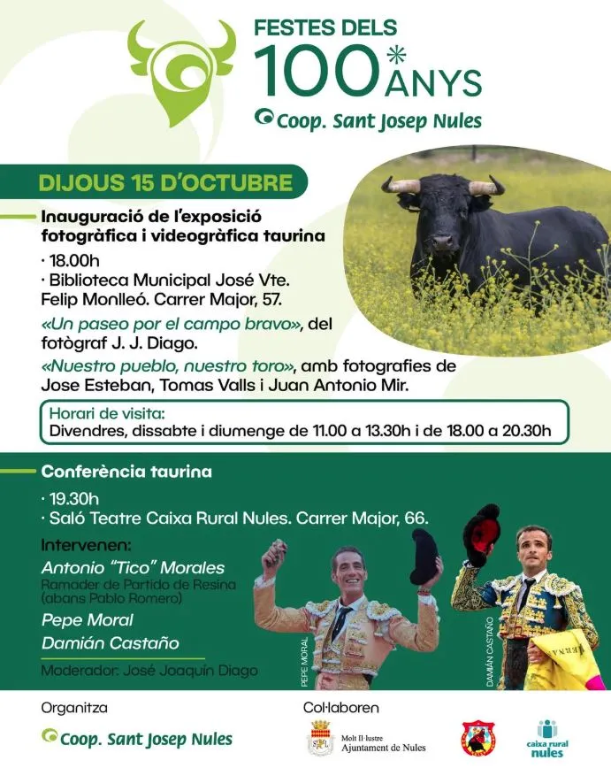

Agenda Taurina
Agenda TaurinaNules celebra el jueves 15 de octubre una conferencia taurina y dos exposiciones por los 100 años de la Cooperativa Sant Josep
Pepe Moral, Damián Castaño y el ganadero Tico Morales (Partido de Resina) protagonizan la conferencia del jueves 15 de octubre en el Saló Teatre de Caixa Rural Nules

La Cooperativa Sant Josep de Nules cumple cien años y lo celebra con unas fiestas especiales del 13 al 18 de octubre. El mundo del toro tiene un papel destacado: además de los festejos del viernes y el sábado, el jueves 15 de octubre se dedica por completo a la cultura taurina.
Dos exposiciones de fotografía taurina
A las 18:00h, la Biblioteca Municipal José Vicente Felip Monlleó (calle Mayor, 57) inaugura dos muestras:
- «Un paseo por el campo bravo», del fotógrafo J. J. Diago.
- «Nuestro pueblo, nuestro toro», con fotografías de José Esteban, Tomás Valls y Juan Antonio Mir.
Se podrán visitar el viernes, el sábado y el domingo, de 11:00h a 13:30h y de 18:00h a 20:30h. Los visitantes podrán votar su fotografía favorita de cada exposición y, entre todos los participantes, se sortearán tres vales de compra.
Conferencia con ganadero y toreros
A las 19:30h, el Saló Teatre de Caixa Rural Nules (calle Mayor, 66) acoge una conferencia taurina con:
- Antonio "Tico" Morales, ganadero de Partido de Resina (antes Pablo Romero).
- Pepe Moral, matador de toros.
- Damián Castaño, matador de toros.
La moderará José Joaquín Diago. La organiza la Cooperativa Sant Josep de Nules, con la colaboración del Ajuntament de Nules, el Club Taurino Nules y Caixa Rural Nules.
El toro, protagonista de las fiestas
El programa sigue el viernes 16 con un toro por la villa de Miura a las 18:00h y un toro embolado, también de Miura, a las 23:00h. El sábado 17 sale un toro por la villa de Partido de Resina a las 18:30h. Todos los horarios, los toros y sus fotos están en la ficha de Nules de Agenda Taurina.
Fuente: @coopagricolasanjose (Cooperativa Sant Josep de Nules, Instagram).
Ver los festejos de hoy Ver todas las noticias